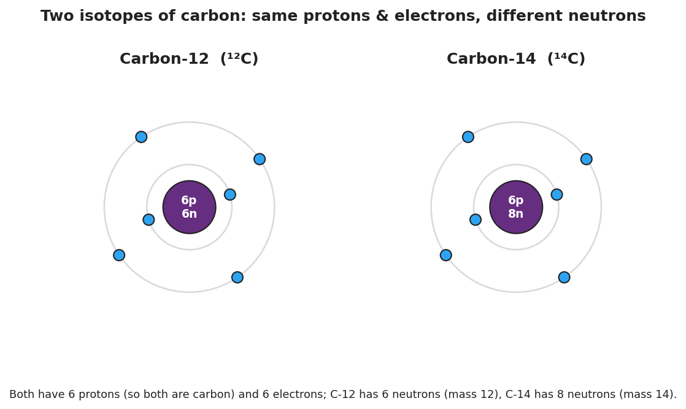
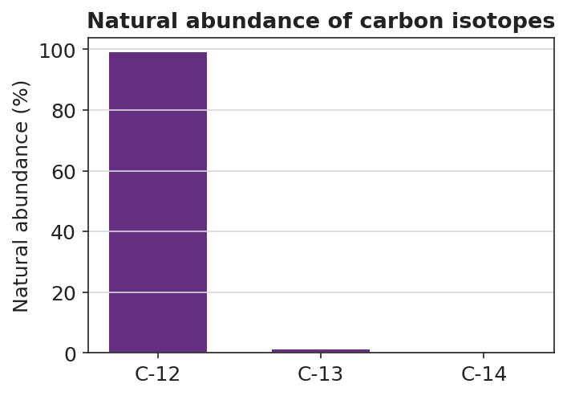

01 Phenomenon
Scientists recover an ancient turtle shell from a coastal marsh dig. They cannot read a date off the shell, but by measuring the carbon-14 inside it they can tell when the turtle died — and, by comparing shells from sites up and down the coast, when an ancient turtle population migrated. While the turtle was alive and eating, its shell held the same tiny fraction of carbon-14 as the world around it. The moment it died, no new carbon-14 came in, and the carbon-14 already there began ticking down at a fixed, known rate. Measure what’s left, and you can read the clock backward.

02 Driving question
How can the kind of carbon atom in a turtle shell tell scientists when that turtle lived and migrated?
03 Notice & wonder
| I notice… | I wonder… |
|---|---|
Turn & Talk #1: Both diagrams above are carbon — same 6 protons, same 6 electrons. The only difference is the number of neutrons. In one sentence, would the turtle’s body treat these two kinds of carbon differently, or the same? Why?
04 Initial model
Your group has a cup of pennium — a fictional element. There are two kinds: a heavy kind (pre-1982 pennies) and a light kind (post-1982 pennies). They are the same “element” but different masses. Your cup is mostly the heavy kind.
You will not calculate a number. Predict, then explain:
The average mass of a pennium in your cup will land (circle one):
- closer to the heavy mass
- closer to the light mass
- exactly in the middle
My reasoning (one sentence): _______________________________________________ _______________________________________________
05 Investigate
Part 1 — ABCs: Sort, count, and weigh your pennium
Sort your cup into the two kinds. Count each pile. Then weigh one of each kind (or use the masses your teacher gives you).
| Kind of pennium | Count (how many) | Mass of ONE (g) |
|---|---|---|
| Heavy (pre-1982) | ||
| Light (post-1982) |
Which kind is more abundant (you have more of) in your cup? _______________
If you grabbed one pennium at random, would you more likely grab the heavy or the light kind? _______________
Does your prediction from the Initial Model still hold? Which mass does the average lean toward, and why?
Part 2 — From pennium to real carbon
Look at the abundance of carbon’s isotopes:

Which isotope is almost all of the carbon in nature? _______________
On the Periodic Table, carbon’s average atomic mass is about 12.011. Is that closer to 12 or to 13? _______________
Use the chart to explain why carbon’s average atomic mass is so close to 12.
Part 3 — Reasoning about chlorine (no calculator needed)
On the Periodic Table, chlorine’s average atomic mass is about 35.5. Chlorine has two main isotopes: chlorine-35 and chlorine-37.
Is 35.5 closer to 35 or to 37? _______________
Which isotope must be more abundant, and how do you know — without calculating?
06 Make it make sense
1. Are they isotopes? Two atoms are described below.
- Atom X: 5 protons, 5 neutrons, 5 electrons
- Atom Y: 5 protons, 6 neutrons, 5 electrons
What element are these? (Use the Periodic Table — what has 5 protons?) _______________
Are X and Y isotopes of the same element? Explain using proton and neutron counts.
- Write each one’s mass number: Atom X = _______ Atom Y = _______
2. Boron’s average atomic mass. Boron (the element above) has isotopes boron-10 and boron-11. The Periodic Table lists boron’s average atomic mass as about 10.81.
Is 10.81 closer to 10 or to 11? _______________
Which isotope of boron is more abundant? How does the average tell you?
3. One average, many atoms. Carbon’s average atomic mass is 12.011.
Does any single carbon atom actually weigh 12.011 u? (yes / no) _______________
Explain your answer using the word isotope and the word abundant.
07 Key vocabulary
- isotope
- atoms of the *same element* (same number of protons, same atomic number) that have *different numbers of neutrons*, and therefore different mass numbers; e.g., carbon-12 and carbon-14 are isotopes of carbon. Isotopes of an element behave the same chemically but differ in mass and nuclear stability.
- mass number
- the total number of protons plus neutrons in an atom's nucleus; a whole number unique to each isotope (carbon-12 has mass number 12; carbon-14 has mass number 14). It is *not* the same as the average atomic mass on the Periodic Table.
- average atomic mass
- the value listed for an element on the Periodic Table: the weighted average mass of all the element's naturally occurring isotopes, weighted by each isotope's abundance; it leans toward the most abundant isotope (carbon's is 12.011 because almost all carbon is carbon-12). No single atom has this mass.
Use each term in a sentence about today’s phenomenon or investigation. Do not copy the definition — use the word to describe something you observed or did.
isotope: _______________________________________________ _______________________________________________
mass number: _______________________________________________ _______________________________________________
average atomic mass: _______________________________________________ _______________________________________________
08 Revise your model
Return to your Initial Model (the pennium prediction). Add vocabulary labels:
Label the two kinds of pennium as “two ___________ of pennium.”
Label each kind’s mass with the term that means protons + neutrons: ___________
Label the predicted cup average with the Periodic-Table term it stands for: ___________
Then finish this Because / But / So sentence about the turtle:
Carbon-12 and carbon-14 are both carbon because __________________________________________, but __________________________________________, so __________________________________________.
09 Exit ticket
- Two atoms are described below.
- Atom 1: 17 protons, 18 neutrons
- Atom 2: 17 protons, 20 neutrons
Are they isotopes of the same element? Name the element, and write each isotope’s mass number.
Element: _______________ Atom 1 mass number: _______ Atom 2 mass number: _______ Isotopes? (yes / no) and why: _______________________________________________
- Chlorine’s average atomic mass on the Periodic Table is about 35.5. Its two isotopes are chlorine-35 and chlorine-37. Which isotope is more abundant, and how do you know — without calculating?
- In one sentence, explain why radiocarbon dating of the turtle shell depends on an unstable isotope. Try to use the words stable and unstable, or the word decay.
10 Explore further
- "Isotopes of pennies" simulation (core ACTIVE LEARNING activity): Each group receives a cup of mixed pennies — "light pennies" (post-1982, mostly zinc, ~2.5 g) and "heavy pennies" (pre-1982, mostly copper, ~3.1 g). The two penny types stand in for two isotopes of one fictional element, "pennium." Same element (all pennies), two masses (two isotopes). Groups sort, count, and weigh, then determine the most common type and reason about which way the *average* penny mass will lean. No calculator-based average is required by the standard, but the structured count makes the abundance → average relationship physical and visible. (Use the data table on the Student Worksheet; a triple-beam balance per group or pre-measured masses both work.)
- Turtle-migration carbon-dating activity: Using the radiocarbon idea built in Phase 1, students interpret a simple "% carbon-14 remaining → approximate age" reference and reason about *which of two turtle shells is older* and what that implies about when the population moved. This is qualitative interpretation, not half-life computation.
- Javalab "Build an Atom / Isotopes": the PhET-style *Isotopes and Atomic Mass* simulator lets students add neutrons to an atom and watch the element name stay fixed while the mass number changes — a clean digital companion to the pennies activity. No external URL is required; any isotope-builder applet on the classroom devices works.